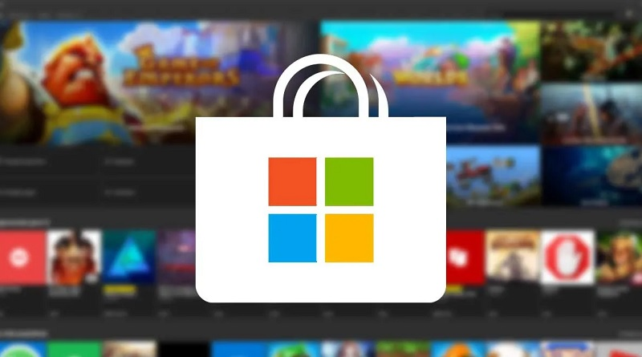

Los juegos de PC con mayores requerimientos para equipos más potentes
Los gráficos son una de las características más importantes a la hora de valorar un título y está claro
que cada vez evolucionan más y más. Hoy repasamos unos cuantos juegos que se caracterizan por ser
excelentes a nivel técnico.

Ciberbullying o Ciberacoso
Son varias cosas que pueden hacerse frente a un caso de ciberbullying: Mantener una charla abierta con
el menor de edad para que pueda decir lo que le pasa. No minimizar ni exagerar la situación, aceptar lo
ocurrido y acompañar al menor de edad. Escuchar las necesidades del menor de edad y tener en cuenta lo
que necesita.

Microsoft estaría trabajando en un importante rediseño para la tienda de Windows
La nueva Microsoft Store seguirá siendo una aplicación basada en UWP (Universal Windows Platform) pero
recibirá actualizaciones frecuentes de forma mensual.


El internet de las cosas con Oplà IoT Kit
El equipo de desarrollo de Arduino ha vuelto a sorprendernos con un nuevo producto orientado a que
cualquiera pueda iniciar proyectos con los que aprovechar las ventajas de la Internet de las Cosas
(IoT).